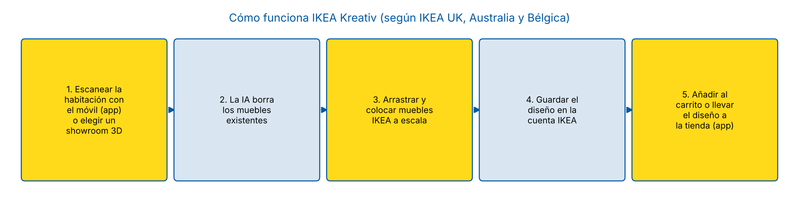

IKEA Kreativ
Elige uno de los más de 50 showrooms en 3D o escanea tu propia habitación. La IA borra tus muebles y colocas los de IKEA a escala. Después guardas, compartes o compras el diseño.
Cómo funciona en 5 pasos
- 1
Escanear la habitación con el móvil (app) o elegir un showroom 3D.
- 2
La IA borra los muebles existentes.
- 3
Arrastrar y colocar muebles IKEA a escala.
- 4
Guardar el diseño en la cuenta IKEA.
- 5
Añadir al carrito o llevar el diseño a la tienda (app).

Lo que hay que saber
Despliega cada panel para ver el detalle.
7Recursos
Vídeo: Kreativ paso a paso
«Come design with me as I explore IKEA’s Kreativ tool!» · canal Mitilak · 2:39. En el vídeo se usa Kreativ dentro de la app de IKEA para diseñar una habitación paso a paso. No es un vídeo oficial de IKEA; el anuncio oficial, más corto, es «Imagine your dream home in mixed reality» (IKEA USA · 1:00).
Imágenes
Las figuras 1 y 2 son de elaboración propia. Las fotos oficiales (IKEA Museum, IKEA UK, IKEA US) se añadirán citando la fuente.
Si no se reproduce, ábrelo en YouTube.